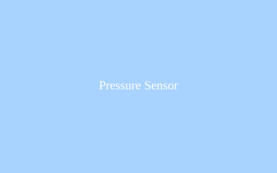
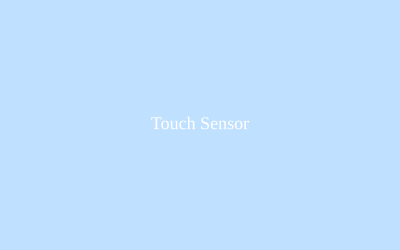

Arduino 硬件分析与白噪音装置
✅ 作业清单
- 硬件选型与采购（压力传感器、触摸传感器、Arduino 板）
- 电路连接与调试
- Arduino 代码编写（传感器数据读取）
- 白噪音模块集成与声音测试
- 整体封装与展示视频拍摄
🎯 最终成果展示
🔧 运用到的 Arduino 硬件分析
1. 压力传感器
薄膜压力传感器是基于新型纳米压敏材料辅以舒适板式模量的超薄薄膜衬底一次性贴片而成，兼具防水和压敏双重功能。当传感器感知到外界压力时，传感器电阻值发生变化，我们采用电路将传感器感知压力变化的压力信号转换成相应变化强度的电信号输出。这样我们就可以通过检测电信号变化就可以得到压力变化情况。

图1：薄膜压力传感器工作原理示意图
2. 触摸传感器
该模块是一个基于触摸检测 IC(TTP223B)的电容式点动型触摸开关模块。常态下，模块输出低电平，模式为低功耗模式；当用手指触摸相应位置时，模块会输出高电平，模式切换为快速模式；当持续 12 秒没有触摸时，模式又切换为低功耗模式。可以将模块安装在非金属材料如塑料、玻璃的表面，另外将薄薄的纸片(非金属)覆盖在模块的表面，只要触摸的位置正确，即可做成隐藏在墙壁、桌面等地方的按键。

图2：TTP223B 电容式触摸传感器模块
🎵 自然白噪音模块
通过压力传感器控制音量大小，触摸传感器切换不同白噪音场景（雨声、海浪声、风声、篝火声）。装置可放置在卧室、办公室等场景，帮助用户放松身心、提高专注力。

图3：Arduino 电路连接示意图

图4：白噪音装置成品展示
🔨 制作过程记录
📌 第一步：硬件准备
采购 Arduino Uno 开发板、薄膜压力传感器、TTP223B 触摸传感器模块、DFPlayer Mini 声音模块、小喇叭、面包板及杜邦线若干。

📌 第二步：电路搭建
按照电路图连接各模块：压力传感器连接到模拟输入口 A0，触摸传感器连接到数字口 D2，DFPlayer Mini 连接到串口（D3/D4），喇叭连接到 DFPlayer 输出端。

📌 第三步：代码编写
编写 Arduino 代码实现：读取压力传感器值（0-1023）映射到音量（0-30）；检测触摸传感器触发切换白噪音场景；通过串口与 DFPlayer 通信控制播放。
📌 第四步：测试与调试
逐个测试各传感器功能，调整压力传感器的灵敏度阈值，确保触摸响应及时。遇到问题：压力传感器初始值不稳定，通过软件滤波解决。
📌 第五步：封装与展示
将电路板放入亚克力外壳，固定传感器在面板上。录制演示视频，展示触摸切换场景和按压控制音量的完整功能。